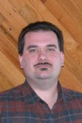

|

Extension Agent, ANR, Forestry and Natural Resources -- Southeast District
Tidewater Agricultural Research and Extension Center
B.S., Virginia Tech (1994)
M.S., Virginia Tech (1998)
Academic Interests
Forestry and natural resources education, land use issues in an urbanizing culture, long-term
sustainability, remote sensing for natural resources assessment
Teaching Responsibilities
Natural resources educational programming for stakeholders, especially within the Virginia
Cooperative Extension's Southeast district.
Selected Extension Activities
Selected Publications
- Lee S, Abbott A, Clark N, and P Araman. 2005. Active countours on statistical manifolds and texture segmentation. In IEEE Proceedings of International Conference on Image Processing. Sept. 11-14, 2005. Genova, Italy.
-
Clark N and S Lee. 2005. Monitoring hemlock vitality using ground-based digital imaging. In Proceedings of Third Symposium on Hemlock Wooly Adelgid in the Eastern United States. Feb. 1-3, 2005. Asheville, NC, USA. p. 262-268.
-
Reams G, Chamberlain J, Clark N. 2004. Monitoring the Sustainability of the Southern Forest. In: Southern Forest Science: Past, Present, and Future. Gen. Tech. Rep. SRS-75. p. 179-190.
-
Lee S, Abbott L, Clark N, Araman P. 2004. Spline curve matching with sparse knot sets. January 27-30, 2004. Asian Conference on Computer Vision. Jeju Island, Korea. p. 246-251.
-
Clark N, Lee S, Araman P. 2004. Finding a good segmentation strategy for tree crown transparency estimation. Proceedings of the 19th Biennial Workshop on Color Photography & Videography in Resource Assessment. October 6-8, 2003. Logan, Utah, USA. American Society for Photogrammetry and Remote Sensing, Bethesda, Maryland, unpaginated CD-ROM. 12 pp.
-
Lee S, Clark N, Araman P. 2004. Automated methods of tree boundary extraction and foliage transparency estimation from digital imagery. Proceedings of the 19th Biennial Workshop on Color Photography & Videography in Resource Assessment. October 6-8, 2003. Logan, Utah, USA. American Society for Photogrammetry and Remote Sensing, Bethesda, Maryland, unpaginated CD-ROM. 10 pp.
-
Clark, N, Lee, S. 2004. Ground-based remote sensing with long lens video camera for upper-stem diameter and other tree crown measurements. Proceedings, Tenth Forest Service Remote Sensing Applications Conference. 8 pp.
-
Lee S, Abbott L, Clark N, Araman P. 2003. Spline curve matching with sparse knot sets: applications to deformable shape detection and recognition. Proceedings of The 29th Annual Conference of the IEEE Industrial Electronics Society. Nov 2-6, 2003. Roanoke, Virginia, USA. p. 1808-1814.
-
Clark N. 2002. 3d reconstruction of a tree stem using video images and pulse distances. Proceedings of Symposium on Statistics and Information Technology in Forestry. Sept 8-12, 2002. Blacksburg, Virginia, USA. p.14-27.
-
Kee E, Clark N, Abbott L. 2002. Automated mosaicking of sub-caonopy video incorporating ancillary data. Proceedings of Symposium on Statistics and Information Technology in Forestry. Sept 8-12, 2002. Blacksburg, Virginia, USA. p. 36-44.
-
Clark N. 2001. New instrument expanding individual tree stem analysis. Proceedings of the Southern Forest Science Conference. Atlanta, Georgia. Nov. 26-28, 2001. 6 pp.
-
Clark N, Zarnoch S, Clark A III, Reams G. 2001. Comparison of Standing Volume Estimates Using Optical Dendrometers. Proceedings of the second annual Forest Inventory and Analysis symposium; Reams, Gregory A.; McRoberts, Ronald E.; Van Deusen, Paul C., eds.; 2000 October 17-18; Salt Lake City, UT. Gen. Tech. Rep. SRS–47. Asheville, NC: U.S. Department of Agriculture, Forest Service, Southern Research Station. 123-128.
-
Clark, N. 2001. Applications of an automated stem measurer for precision forestry. Proceedings of the First International Precision Forestry Symposium. June 17-20, 2001. University of Washington College of Forest Resources. Seattle, Washington. p. 93-98. (refereed)
-
Clark. N. 2001. Formulating an image matching strategy for terrestrial stem data collection using a multisensor video system. Proceedings of the 18 th Biennial Workshop on Color Photography & Videography in Resource Assessment. May 16-18, 2001. Amherst, Massachusetts, USA. Presented and accepted May 16, 2001, awaiting production of publication.
-
Clark N, Wynne R, Schmoldt D. 2000. A review of past research on dendrometers. Forest Science. 46(4): 570-576.
-
Clark N. 2000. Initial results from a video-laser rangefinder device. Proceedings, SOFOR GIS 2000, 3rd Southern Forestry GIS Conference.. D1: 6 pp.
-
Clark N, Schmoldt D, Araman P. 2000. Development of a digital camera tree evaluation system. Proceedings, Society of American Foresters 1999 National Convention. 495-497.
-
Clark N, Wynne R, Schmoldt D, Winn M. 2000. Digital terrestrial photogrammetric methods for tree stem analysis. Integrated Tools for Natural Resources Inventories in the 21st Century. Proceedings of the IUFRO Conference. General Technical Report NC-212. 353-363.
-
Clark N, Wynne R, Schmoldt D, Winn M. 2000. An assessment of the utility of a non-metric digital camera for measuring standing trees. Computers and Electronics in Agriculture. 28: 151-169.
-
Clark N, Schmoldt D, Wynne R, Winn M, Araman P. 2000. Ground-based digital imagery for tree stem analysis. Proceedings, Resource Technology ’98 Nordic. Salminen, H., Saarikko, J. and Virtanen, E. (eds.) Finnish Forest Research Institute, Research Paper 791. 9 pp.
-
Clark, N. 1998. An
Assessment of the Utility of a Non-Metric Digital Camera for Measuring Standing Trees. Master's Thesis. Virginia Polytechnic Institute and State University. etd-110298-111109.
-
Clark N, Wynne R, Schmoldt D, Araman P, Winn M. 1998. Use of a non-metric digital camera for tree stem evaluation. Proceedings, 1998 ASPRS/RT Annual Convention. 13 pp.
Membership in Professional Organizations
Back to Faculty List
Return to Top
Web Designer: Connie
Linkous
Page Updated:
6/15/06
|